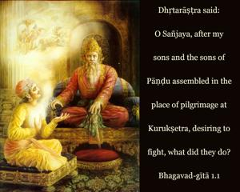

Dhṛtarāṣṭra said: O Sañjaya, after my sons and the sons of Pāṇḍu assembled in the place of pilgrimage at Kurukṣetra, desiring to fight, what did they do?

Bhagavad-gītā is the widely read theistic science summarized in the Gītā-māhātmya (Glorification of the Gītā). There it says that one should read Bhagavad-gītā very scrutinizingly with the help of a person who is a devotee of Śrī Kṛṣṇa and try to understand it without personally motivated interpretations. The example of clear understanding is there in the Bhagavad-gītā itself, in the way the teaching is understood by Arjuna, who heard the Gītā directly from the Lord. If someone is fortunate enough to understand the Bhagavad-gītā in that line of disciplic succession, without motivated interpretation, then he surpasses all studies of Vedic wisdom, and all scriptures of the world. One will find in the Bhagavad-gītā all that is contained in other scriptures, but the reader will also find things which are not to be found elsewhere. That is the specific standard of the Gītā. It is the perfect theistic science because it is directly spoken by the Supreme Personality of Godhead, Lord Śrī Kṛṣṇa.
The topics discussed by Dhṛtarāṣṭra and Sañjaya, as described in the Mahābhārata, form the basic principle for this great philosophy. It is understood that this philosophy evolved on the Battlefield of Kurukṣetra, which is a sacred place of pilgrimage from the immemorial time of the Vedic age. It was spoken by the Lord when He was present personally on this planet for the guidance of mankind.
The word dharma-kṣetra (a place where religious rituals are performed) is significant because, on the Battlefield of Kurukṣetra, the Supreme Personality of Godhead was present on the side of Arjuna. Dhṛtarāṣṭra, the father of the Kurus, was highly doubtful about the possibility of his sons’ ultimate victory. In his doubt, he inquired from his secretary Sañjaya, “What did they do?” He was confident that both his sons and the sons of his younger brother Pāṇḍu were assembled in that Field of Kurukṣetra for a determined engagement of the war. Still, his inquiry is significant. He did not want a compromise between the cousins and brothers, and he wanted to be sure of the fate of his sons on the battlefield. Because the battle was arranged to be fought at Kurukṣetra, which is mentioned elsewhere in the Vedas as a place of worship – even for the denizens of heaven – Dhṛtarāṣṭra became very fearful about the influence of the holy place on the outcome of the battle. He knew very well that this would influence Arjuna and the sons of Pāṇḍu favorably, because by nature they were all virtuous. Sañjaya was a student of Vyāsa, and therefore, by the mercy of Vyāsa, Sañjaya was able to envision the Battlefield of Kurukṣetra even while he was in the room of Dhṛtarāṣṭra. And so, Dhṛtarāṣṭra asked him about the situation on the battlefield.
Both the Pāṇḍavas and the sons of Dhṛtarāṣṭra belong to the same family, but Dhṛtarāṣṭra’s mind is disclosed herein. He deliberately claimed only his sons as Kurus, and he separated the sons of Pāṇḍu from the family heritage. One can thus understand the specific position of Dhṛtarāṣṭra in his relationship with his nephews, the sons of Pāṇḍu. As in the paddy field the unnecessary plants are taken out, so it is expected from the very beginning of these topics that in the religious field of Kurukṣetra, where the father of religion, Śrī Kṛṣṇa, was present, the unwanted plants like Dhṛtarāṣṭra’s son Duryodhana and others would be wiped out and the thoroughly religious persons, headed by Yudhiṣṭhira, would be established by the Lord. This is the significance of the words dharma-kṣetre and kuru-kṣetre, apart from their historical and Vedic importance.